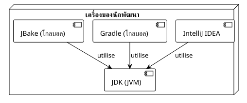

บทความ 0: การตั้งค่าสภาพแวดล้อมสำหรับการสร้างปลั๊กอิน Gradle
เผยแพร่เมื่อ 22 September 2025
บทนำ
เพื่อพัฒนา Gradle plugins ได้อย่างมีประสิทธิภาพ จำเป็นอย่างยิ่งต้องมีสภาพแวดล้อมการพัฒนาที่ได้รับการกำหนดค่าอย่างดี เซ็ตอัปที่ดีจะช่วยให้คุณประหยัดเวลา ลดความหงุดหงิด และรับประกันความสม่ำเสมอของบิลด์ของคุณ
-
Le JDK(Java Development Kit) เพราะ Gradle และ JBake ทำงานบน JVM
-
Un ไอดีอีที่ทันสมัย (IntelliJ IDEA) พร้อมรองรับ Kotlin และ Gradle ได้เป็นอย่างดี
-
Gradleตัวเขาเอง เพื่อเริ่มต้นโครงการ
-
JBake, เอนจินของเว็บไซต์สแตติกของเรา

1. JDK : เอนจินของ Gradle
Gradle เป็นแอปพลิเคชันที่ทำงานบน Java Virtual Machine (JVM) ดังนั้น การติดตั้ง JDK จึงเป็นข้อกำหนดเบื้องต้นที่จำเป็นอย่างยิ่ง
เลือกเวอร์ชันไหนดี
แนะนำให้ใช้เวอร์ชัน LTS (Long-Term Support) ของ Java ในปัจจุบันนี้JDK 17 ou JDK 21เป็นตัวเลือกที่ยอดเยี่ยม
ติดตั้งผ่าน SDKMAN! (แนะนำ)
SDKMAN! เป็นเครื่องมือที่ยอดเยี่ยมสำหรับจัดการเวอร์ชันของ SDK จำนวนมาก รวมถึง Java และ Gradle
ติดตั้ง SDKMAN!
curl -s "https://get.sdkman.io" | bash source "$HOME/.sdkman/bin/sdkman-init.sh"ติดตั้งเวอร์ชันหนึ่งของ JDK
# Pour lister les versions de Java disponibles sdk list java
# Pour installer Java 17 (par exemple, la distribution Temurin)
sdk install java 17.0.8-temตรวจสอบการติดตั้ง
java -versionคุณควรเห็นเวอร์ชันที่คุณเพิ่งติดตั้งแสดงขึ้นมา
2. IDE : IntelliJ IDEA
สำหรับการพัฒนา Gradle plugin ด้วย Kotlin DSL,IntelliJ IDEAเป็นเครื่องมือที่เลือกใช้ การผสานรวมของมันกับ Gradle และ Kotlin นั้นไม่มีใครเทียบได้
-
ฉบับชุมชน :ฟรีและเพียงพออย่างมากสำหรับการเริ่มต้น
-
อัลติเมทเอ็ดดิชัน :เป็นบริการแบบเสียค่าใช้จ่าย และมีฟีเจอร์ขั้นสูงสำหรับการพัฒนาเว็บและฐานข้อมูล
ดาวน์โหลดเวอร์ชันที่เหมาะกับคุณได้จากเว็บไซต์ของ JetBrains: https://www.jetbrains.com/idea/download/
IDE จะตรวจจับไฟล์ของคุณโดยอัตโนมัติ`build.gradle.kts` et settings.gradle.kts, มอบการเติมข้อความอัตโนมัติอันทรงพลัง การนำทางโค้ด และเครื่องมือดีบักในตัวให้คุณ
3. Gradle : เครื่องมือสำหรับ build
แม้ว่าแต่ละโปรเจกต์จะใช้ Gradle เวอร์ชันของตนเองผ่าน Gradle Wrapper การติดตั้ง Gradle แบบส่วนกลางก็มีประโยชน์สำหรับงานต่างๆ เช่น การเริ่มต้นโปรเจกต์ใหม่ (gradle init).
การติดตั้งผ่าน SDKMAN!
เช่นเดียวกับกรณีของ JDK, SDKMAN! ทำให้การติดตั้ง Gradle ง่ายขึ้น
ติดตั้ง Gradle
sdk install gradleตรวจสอบการติดตั้ง
gradle -vคำสั่งนี้จะแสดงเวอร์ชันของ Gradle, Kotlin, Groovy และ JDK ที่ใช้งาน
4. JBake : เครื่องมือสร้างเว็บไซต์แบบสแตติก
JBake คือเครื่องมือที่เราจะใช้ในการแปลงไฟล์ต้นฉบับของเรา (เช่นไฟล์นี้) ให้เป็นเว็บไซต์แบบสแตติก การติดตั้งไว้ในเครื่องนั้นสะดวกสำหรับการดูตัวอย่างการเปลี่ยนแปลง
การติดตั้งผ่าน SDKMAN!
เช่นเดียวกับเครื่องมืออื่น ๆ SDKMAN! เป็นวิธีที่ง่ายที่สุด
ติดตั้ง JBake
sdk install jbakeตรวจสอบการติดตั้ง
jbake -vคำสั่งนี้จะแสดงเวอร์ชันของ JBake และข้อมูลสภาพแวดล้อม Java ที่ใช้งาน
5. Gradle Wrapper : แนวปฏิบัติที่ดีที่สุดอย่างแท้จริง
เมื่อสร้างโปรเจกต์ของคุณเสร็จแล้ว (ซึ่งเราจะดูในบทความถัดไป) คุณไม่ควรใช้คำสั่งโกลบอลอีกต่อไป`gradle`. แทนที่จะเป็นเช่นนั้น คุณจะใช้Gradle Wrapper(./gradlew), สคริปต์ที่รวมอยู่ในโปรเจกต์ของคุณ
ทำไม?
-
ความสามารถในการทำซ้ำ:Wrapper รับประกันว่าทุกคนที่ทำงานในโปรเจกต์ (รวมถึงเซิร์ฟเวอร์ CI/CD ของคุณ) ใช้…อย่างแม่นยำเวอร์ชัน Gradle เดียวกัน, จึงขจัดข้อผิดพลาดในการ build ที่เกิดจากสภาพแวดล้อมที่แตกต่างกัน
-
ความเรียบง่าย:ไม่จำเป็นต้องติดตั้ง Gradle ด้วยตนเองเพื่อมีส่วนร่วมในโปรเจกต์
เพียงโคลนรีโพซิทอรีและรัน`./gradlew`ไม่มีข้อความภาษาฝรั่งเศสให้แปลค่ะ
คำสั่งทั่วไปจะมีลักษณะดังนี้:
# Ne pas faire : gradle build
# À faire :
./gradlew build6. Docker และ Portainer : สำหรับการบิลด์ที่ทำซ้ำได้ (ไม่บังคับ)
แม้ว่าจะไม่จำเป็นอย่างเคร่งครัดสำหรับการเขียนปลั๊กอิน Docker และ Portainer ก็เป็นเครื่องมือ DevOps สมัยใหม่ที่ช่วยอำนวยความสะดวกอย่างมากในการสร้างบิลด์ที่ทำซ้ำได้และการจัดการสภาพแวดล้อมของคุณ
การติดตั้ง Docker Engine
Docker ช่วยให้คุณแพ็กแอปพลิเคชันและส่วนที่ต้องพึ่งพาของคุณไว้ในคอนเทนเนอร์
ติดตั้ง Docker ผ่านสคริปต์อย่างเป็นทางการ:
curl -fsSL https://get.docker.com -o get-docker.sh sudo sh get-docker.shจัดการ Docker โดยไม่ใช้ sudo (แนะนำ):
เพิ่มผู้ใช้ของคุณลงในกลุ่ม`docker`.
sudo usod -aG docker $USERdocker run hello-worldจัดการ Docker ด้วย Portainer (GUI)
Portainer เป็นอินเทอร์เฟซเว็บแบบเบาสำหรับจัดการคอนเทนเนอร์ Docker ของคุณ
สร้างโวลุ่มสำหรับข้อมูลของ Portainer :
docker volume create portainer_dataเริ่มคอนเทนเนอร์ Portainer:
docker run -d -p 8000:8000 -p 9443:9443 --name portainer --restart=always -v /var/run/docker.sock:/var/run/docker.sock -v portainer_data:/data portainer/portainer-ce:latestตอนนี้คุณสามารถเข้าถึงอินเทอร์เฟซของ Portainer ได้ที่`https://localhost:9443`.
บทสรุป
สภาพแวดล้อมของคุณพร้อมแล้ว! คุณมี JDK, IDE ที่เหมาะสมที่สุด, Gradle และ JBake ด้วยการเพิ่ม Docker คุณยังพร้อมสำหรับการสร้างบิลด์ที่บรรจุในคอนเทนเนอร์และทำซ้ำได้ รากฐานที่มั่นคงนี้จะช่วยให้คุณมุ่งเน้นไปที่สิ่งสำคัญ: การพัฒนาปลั๊กอินที่ทรงพลังและมีประโยชน์
ในบทความถัดไป เราจะใช้คำสั่ง`gradle init`เพื่อสร้างโครงสร้างของโปรเจกต์ปลั๊กอินแรกของเรา